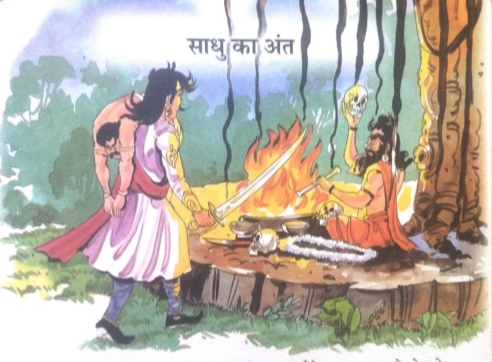
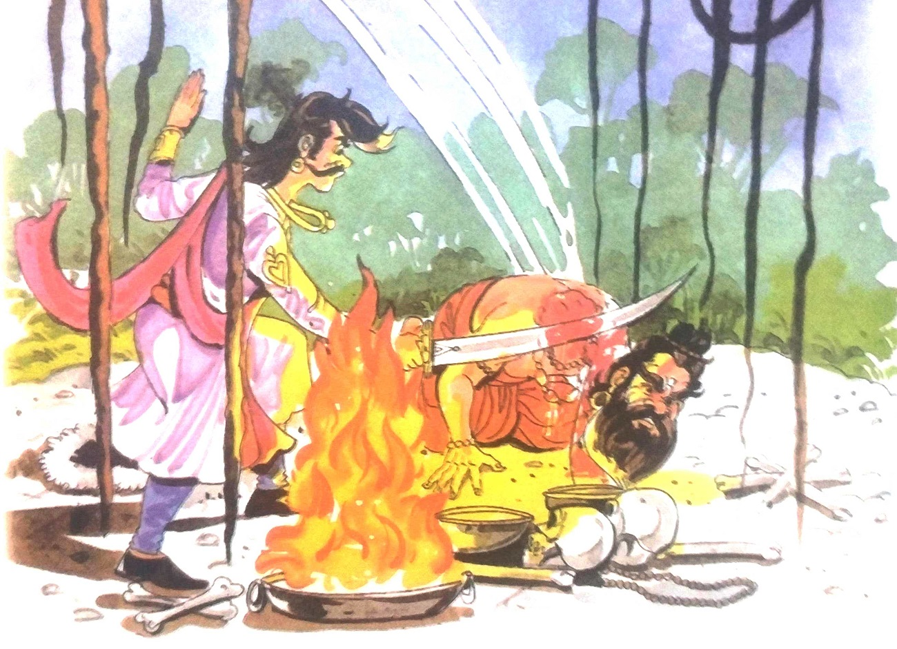
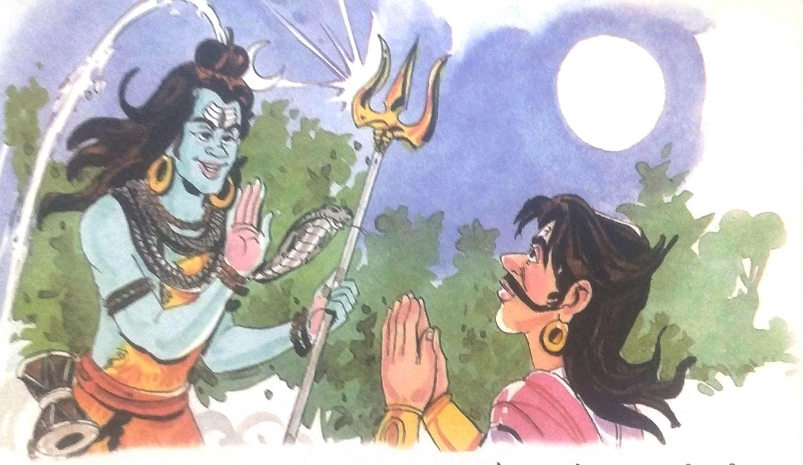

૨૫-સાધુનો અંત

રાજા વિક્રમાદિત્ય મૃતદેહ લઈને ઋષિ પાસે પહોંચ્યા. ઋષિ વટવૃક્ષ નીચે બેઠા હતા. તેની
સામે જમીન પર તાજું લોહી પથરાયેલું હતું. તેની સામે એક તાંત્રિકની ખોપરી અને હાડકાં મૂકવામાં આવ્યાં
હતાં. તેની આસપાસ લોહીથી ભરેલી ઘણી વાસણો રાખવામાં આવી હતી. તેની નજીક આગ સળગી રહી હતી. ત્યાંનું
દ્રશ્ય ખૂબ જ ભયાનક લાગતું હતું.
રાજા વિક્રમાદિત્યને જોઈને ઋષિ આનંદથી છલકાઈ ગયા. તે ઉભો થયો અને ઝડપથી રાજા પાસે ગયો
અને કહ્યું, "રાજા, તમે ખરેખર ખૂબ જ મહાન છો, તમે તમારી વાતમાં ખૂબ જ સાચા છો, લોકો તમારી પ્રશંસા
કરતા નથી, આજે મને આ વાતની ખાતરી થઈ ગઈ છે."
એમ કહીને તેણે રાજા વિક્રમાદિત્ય પાસેથી મૃતદેહ લીધો. તેણે તેને સ્નાન
કરાવ્યું અને તેના પર મલમ લગાવ્યું. ત્યારબાદ મૃતદેહને હાર પહેરાવીને તાંત્રિક
પ્રતીકની મધ્યમાં મૂકવામાં આવ્યો હતો. પછી સંતે તેના આખા શરીર પર રાખ અને સફેદ
કપડાં પહેર્યા. તે પછી તેણે તપસ્યા કરવાનું શરૂ કર્યું.
કેટલાક મંત્રોના જાપ કર્યા
પછી ઋષિએ બેતાલનું આહ્વાન કર્યું. તે પછી તેણે માનવ શરીરના કેટલાક અંગોની આહુતિ
આપી. પછી તેણે રાજા વિક્રમાદિત્યને કહ્યું, "મહારાજ! તમે આ સ્થાન પર દંડવત પ્રણામ કરો. આમ
કરવાથી ભગવાન તમારા પર પ્રસન્ન થશે."

સાધુએ તરત જ પ્રણામ કરવા માટે નમ્યા. સમય બગાડ્યા વિના, રાજા વિક્રમાદિત્યએ તરત જ તેની
તલવારથી ઋષિનું માથું કાપી નાખ્યું. એ પછી રાજાએ પોતાની છાતી ફાડીને પોતાનું હૃદય વેતાલાને ખાવા
માટે આપ્યું.
વેતાલાએ કહ્યું, "રાજા! તમે એક ઉમદા કાર્ય કર્યું છે. આજથી આ ઋષિની બધી શક્તિઓ તમારી
છે. મારા કારણે તમને ઘણી મુશ્કેલીનો સામનો કરવો પડ્યો હતો. તેથી તમે મારી પાસેથી વરદાન માગો."
આ સાંભળીને રાજા વિક્રમાદિત્ય બોલ્યા, “તમારી વાર્તાઓથી મને સારું મનોરંજન થયું. મારે
કંઈ જોઈતું
નથી. મારે તમારા માટે એક જ ઈચ્છા છે કે તમારા દ્વારા સંભળાવાયેલી વાર્તાઓ વિશ્વ પ્રસિદ્ધ થાય. તે
દરેક જગ્યાએ સાંભળાય.”
"બરાબર." વેતાલાએ કહ્યું, “તારી આ ઈચ્છા ચોક્કસ પૂરી થશે. આ બધી વાર્તાઓ મારા આશીર્વાદ
મેળવશે. જે
કોઈ પણ આ સાંભળશે અથવા તેનું વર્ણન કરશે તે જીવનનું જ્ઞાન મેળવશે અને દુષ્ટતાથી દૂર રહેશે."
એમ કહીને વેતાલા મૃતદેહ છોડીને કાયમ માટે ચાલ્યા ગયા.

રાજા વિક્રમાદિત્યના આ કાર્યથી પ્રસન્ન થઈને ભગવાન શિવ તેમની સમક્ષ પ્રગટ થયા. તેણે
રાજાને અપરાજિત
રહેવા માટે આશીર્વાદ આપ્યા અને કહ્યું કે તે જ્યારે ઈચ્છે ત્યારે આ દુનિયા છોડી શકે છે. ભગવાન શિવ
આશીર્વાદ આપ્યા પછી અદૃશ્ય થઈ ગયા. રાજા વિક્રમાદિત્ય તેના મહેલમાં પાછા આવ્યા.
|